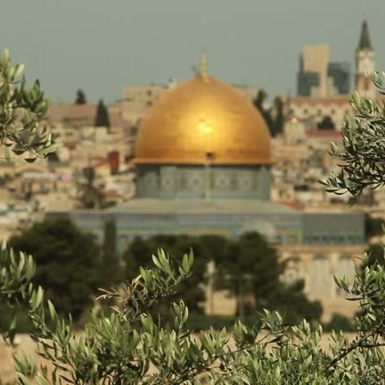

معرض الصور


قضية إنسانية تُحاول أن تُحصر في إطار إقليمي ضيق
تُعدُّ فلسطين من أقدم المناطق في العالم، وقد بدأت قصتها منذ عهد آدم عليه السلام، الذي يُقال إنه من وضع اللبنة الأولى للمسجد الأقصى، قلب فلسطين النابض. كانت فلسطين ملتقى للعديد من الحضارات الكبرى، بدءًا من الكنعانيين والفينيقيين، وصولًا إلى الفتح الإسلامي الذي نقلها إلى مرحلة جديدة. في القرن السادس عشر، سقطت فلسطين في يد العثمانيين، وأصبحت جزءًا من الإمبراطورية العثمانية حتى نهاية الحرب العالمية الأولى. بعد انتهاء الحرب، دخلت فلسطين تحت الانتداب البريطاني، الذي مهّد الطريق للوعد المشؤوم. بعدها، دخلت فلسطين مرحلة أكثر ظلمة، إذ مثّل هذا الوعد منحًا استعمارياً لليهود بإقامة وطن قومي على أرضٍ لا يملكونها. بدأت بعدها مرحلة التهجير القسري للفلسطينيين، وتكثّفت الهجرات اليهودية إلى فلسطين بدعم وحماية من سلطات الانتداب البريطاني. في عام 1948، أُعلن عن قيام "دولة إسرائيل" على أنقاض المدن والقرى الفلسطينية، ما تسبَّب في نكبة كبرى تمثّلت في تشريد أكثر من 700 ألف فلسطيني واقتلاعهم من جذورهم. ولم تتوقف المأساة عند هذا الحد؛ ففي عام 1967، احتُلّت الضفة الغربية وقطاع غزة والقدس الشرقية في نكسة جديدة. تتابعت بعدها الانتفاضات الشعبية، وتصاعدت محاولات تهويد القدس، وسط حصار خانق على غزة وانقسام سياسي داخلي. ورغم كل ذلك، ليست فلسطين مجرد رقعة جغرافية متنازع عليها، بل هي جوهر الصراع بين الحق والباطل، بين الجذور المزروعة بدماء الشهداء وبين محاولات الاقتلاع والتزييف. ورغم التهجير والمجازر والحصار والانقسام، تبقى فلسطين حيّة لا تموت، نابضة في قلوب أبنائها، حاضرة في وعي كل حرّ في هذا العالم. إن مقاومة الفلسطيني ليست فقط بالسلاح، بل بصموده، بتمسكه بهويته، بلغته، بثقافته، وبحلمه الذي لا ينكسر. فكل يوم يبزغ فيه فجر جديد على أرض فلسطين هو شهادة على أن الاحتلال إلى زوال، وأن الشعوب الحية لا تُهزم مهما طال ليل الظلم.
هي التي أدركت معنى الاحتلال، ومعنى أن يُسلب الوطن غصبًا وتُقمع الحرية، بعد الاستعمار الذي عاشته لمدة 132 سنة. ولهذا، لم تكن القضية الفلسطينية مجرد قضية عادية بالنسبة للجزائر وشعبها، بل كانت حاضرة دومًا، ليس حضورًا عابرًا، بل امتدادًا لنفس المعركة: معركة التحرر والكرامة. منذ استقلال الجزائر سنة 1962، اتخذت موقفًا واضحًا لا لبس فيه تجاه القضية الفلسطينية، فقد كانت من أوائل الدول التي احتضنتها، وقدّمت لها الدعم السياسي والعسكري والمادي، وفتحت أبوابها لمنظمات المقاومة، وساندتها في المحافل الدولية كان صوت الجزائر حاضرًا دائمًا، منددًا بالظلم الواقع على الشعب الفلسطيني، ورافضًا لأي شكل من أشكال التطبيع، وامتد هذا الموقف الصلب إلى الشارع الجزائري الذي عبّر مرارًا عن تضامنه وتكاتفه القلبي والجماهيري مع فلسطين. وازداد هذا الارتباط رسوخًا بعد العبارة الشهيرة التي قالها الرئيس الراحل هواري بومدين: "نحن مع فلسطين ظالمة أو مظلومة"، والتي عبّرت بصدق عن إيمان الجزائر بأن تحرير فلسطين ليس شأناً فلسطينيًا فحسب، بل قضية شرف عربي لا يمكن التنازل عنها أبدًا. واليوم، ومع كل ما يشهده العالم من موجات تطبيع وتواطؤ وصمت، تبقى الجزائر صامدة على موقفها، مؤمنة بأن فلسطين هي القضية المركزية للأمة، وأنه لا كرامة عربية تُستعاد إلا بتحرر القدس.
| السنة | دور الجزائر |
| 1187م | أبو مدين شعيب يشارك مع صلاح الدين في تحرير القدس بمعركة حطين. |
| 1962م | الجزائر المستقلة تتبنى القضية الفلسطينية وتدعم منظمة التحرير. |
| 1967م | المشاركة في حرب 1967 ودعم دبلوماسي للمقاومة. |
| 1974م | الجزائر أول دولة تستقبل ياسر عرفات وتدفع للاعتراف بمنظمة التحرير. |
| 1988م | إعلان قيام دولة فلسطين من العاصمة الجزائرية. |
| 2000م | دعم للانتفاضة الثانية بمسيرات وتبرعات شعبية واسعة. |
| 2000s | منح دراسية للطلبة الفلسطينيين في الجامعات الجزائرية. |
| 2022م | رعاية مؤتمر المصالحة الفلسطينية وتوقيع "إعلان الجزائر". |
| 2023–2024م | دعم إنساني لغزة ورفض علني للتطبيع مع الاحتلال. |
| 2025م | تجديد الدعم الثابت والتأكيد على مركزية القضية الفلسطينية في مجلس الأمن. |
نقترح عليك مجموعة من الفيديوهات والبودكاست التوعوية بالقضية الفلسطينية
نحن فريق مُطوّري سطيف SDG، مجموعة من الطلبة الجامعيين الطموحين، ندرس بجامعة فرحات عباس سطيف 1 ، كلية العلوم. اجتمعنا على شغف واحد: استخدام التكنولوجيا والمعرفة في خدمة القضايا العادلة، وعلى رأسها القضية الفلسطينية.
نؤمن بأن دورنا لا يقتصر على الدراسة الأكاديمية، بل يمتد إلى المساهمة الفعلية في بناء وعي مجتمعي واعٍ ومتحرّك. نعمل سويًا على مشاريع رقمية وثقافية تهدف إلى نشر الوعي، والدفاع عن الحق، وتعزيز الهوية الفلسطينية في وجدان الأجيال.
هذا الموقع هو إحدى مبادراتنا التي نأمل أن تسهم في إيصال صوت فلسطين، والتأكيد على أن القضية لا تزال حية في قلوب الشباب الجزائري، وفي وعي كل حر.